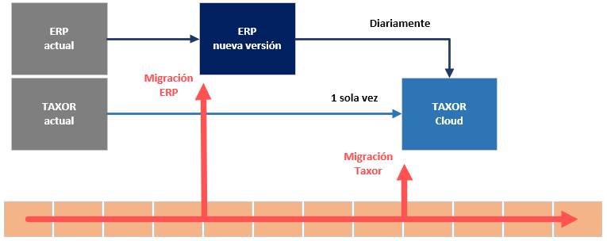

Migración

¿Cómo se realiza la migración?
El conector tomará los datos del actual Taxor y los replicará automáticamente en Taxor Cloud para cada una de las empresas.
¿Qué datos se migran?
Los datos relativos a la sociedad: constitución, socios y accionistas, administradores, sociedades participadas, etc.
Datos históricos relativos a las liquidaciones y declaraciones: IVA, retenciones, sociedades, etc.
¿Cuándo realizar la migración?
Se puede realizar la migración en cualquier momento, después de haber migrado el ERP.
Se puede seguir utilizando Taxor hasta la migración a Taxor Cloud, siempre que se cuente con la información apropiada para hacer las liquidaciones o declaraciones.
¿Qué ocurre con el actual Taxor?
A partir del momento de la migración a Taxor Cloud deja de utilizarse.
Deben eliminarse los objetos y los datos que contienen en la nueva versión del ERP ya que no son necesarios.
¿Qué ocurre a partir del momento de la migración a Taxor Cloud?
La sincronización diaria incremental tomará el detalle de la información desde la nueva versión del ERP.
Se podrá realizar cualquier liquidación o declaración relativa al año 2020 en adelante ya que el conector habrá obtenido la información necesaria tanto desde
el antiguo como desde el nuevo ERP.
¿Qué ocurre con el add-on de Taxor incluido en la licencia del cliente?
Puede eliminarse siempre y cuando no se vaya a utilizar la extensión de Summar en una versión Business Central on-premise (BC17 o superior),
en cuyo caso el add-on continua siendo necesario para la ejecución de la extensión.